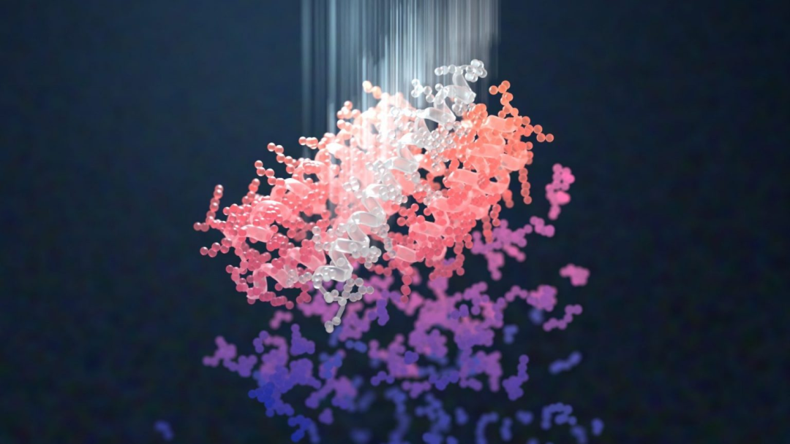
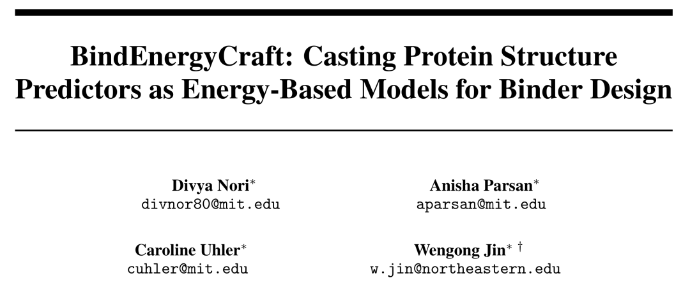
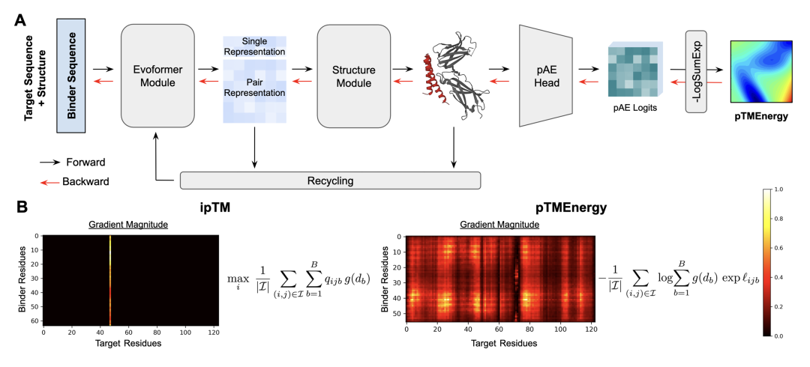
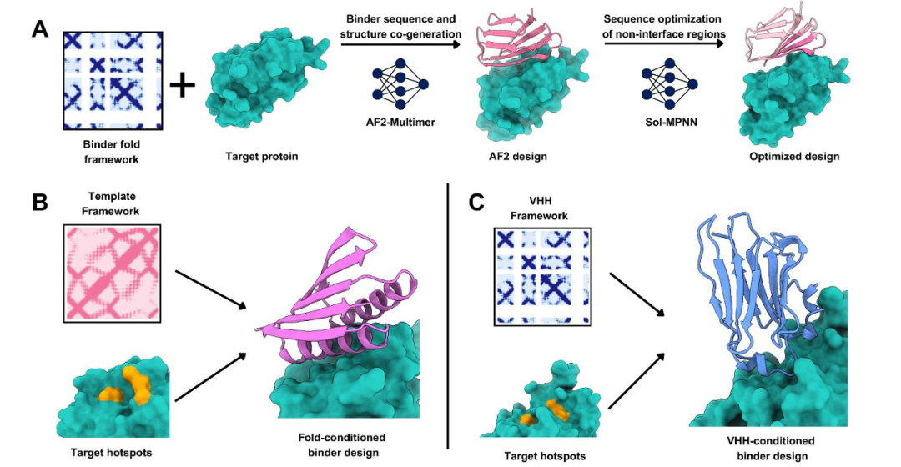
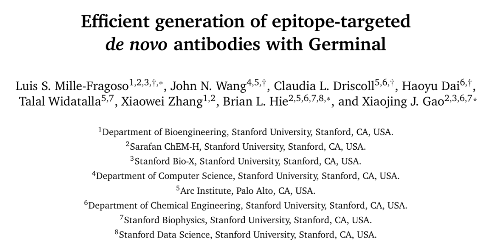
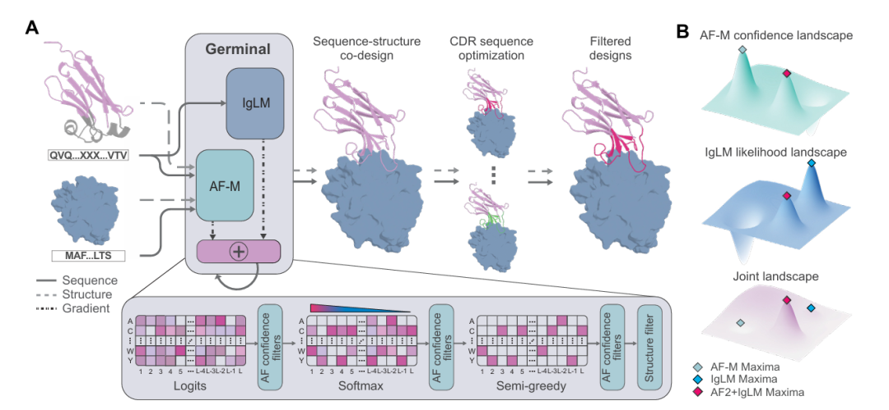
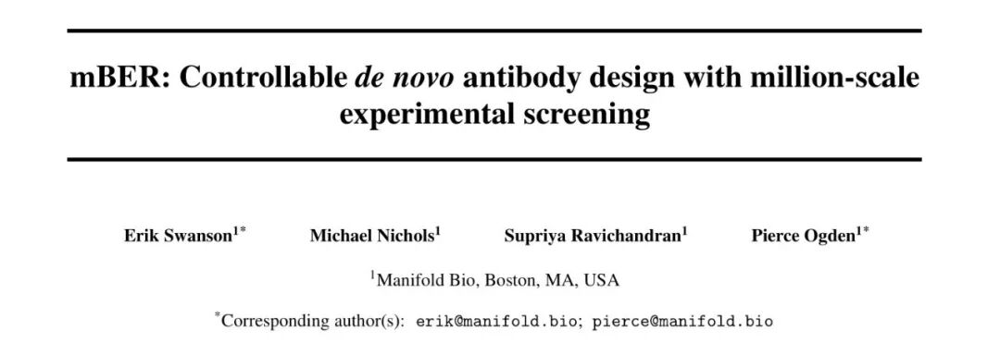
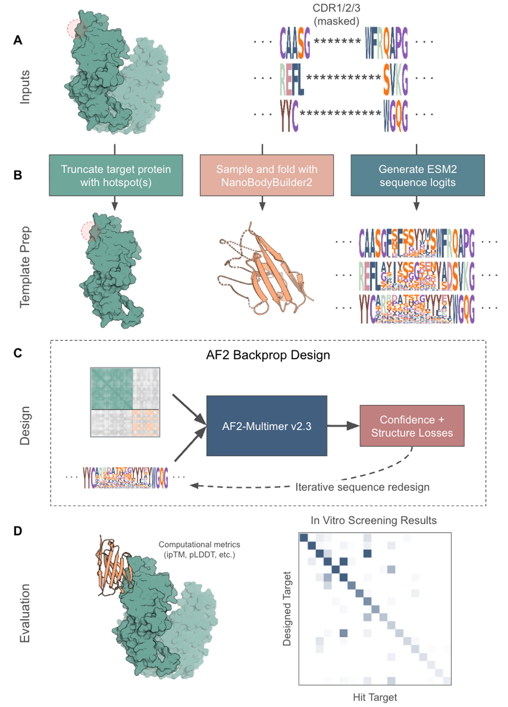

Protein Hallucination Models in the Post-BindCraft Era
Contents
In October 2024 BindCraft appeared, and many people realized something for the first time: AlphaFold2 is not only a structure prediction tool, it already encodes a scoring system for what counts as a reasonable structure.
It trained no new model and added no complex physical energy terms. Instead it used a clever trick: treat the structure prediction module of AlphaFold2.3 Multimer as a differentiable scoring function, back-propagate through sequence space by hallucination, and hallucinate a reasonable binder step by step. With high success rates across many targets, the idea proved workable, and binder design was redefined almost overnight.

But if you have actually run BindCraft, or read its loss design carefully, you quickly notice a fact: BindCraft is clever at binder design but far from perfect. It proves the road is passable rather than being a complete system. It leaves real gaps in stability optimisation, sequence naturalness, structural controllability, and adaptation to special proteins such as antibodies.
That is exactly where the next batch of models came in. They do not reject BindCraft. Almost all of them stand on its shoulders to patch, constrain and strengthen the paradigm. Today let us look at four models of the post-BindCraft era: BindEnergyCraft, FoldCraft, Germinal and mBER.
01 — BindEnergyCraft: an energy-based objective
If BindCraft was the first to bring AlphaFold into binder design, BindEnergyCraft is the first to seriously ask: what are we actually optimising?

BindEnergyCraft does not reject BindCraft's framework. It still uses AlphaFold-Multimer, still searches sequence space by back-propagation, and can still attach ProteinMPNN as post-processing. It changes exactly one thing: the objective.
The authors noticed that AlphaFold does not only output a single most-probable conformation when predicting structure; it also provides a full statistical description of structural uncertainty, especially the predicted aligned error (pAE) distribution at the level of residue pairs. In BindCraft these signals were used mostly for post-hoc filtering rather than in optimisation.
BindEnergyCraft's key innovation is to reconstruct these scattered confidence signals into a unified, differentiable global energy function, pTMEnergy. The function comes from AlphaFold's implicit modelling of structure prediction likelihood: the logit distribution from the pAE head is interpreted as residue-pair energy terms and jointly modelled over the whole complex. Unlike the heuristic ipTM, which leans toward "did it bind", pTMEnergy gives a dense and continuous gradient signal across interface residue pairs.

The results are not surprising. With the pipeline essentially unchanged, BindEnergyCraft has smoother gradient descent, more stable convergence, visibly fewer interface clashes and higher in-silico success across several targets. It is not a disruptive new model but a textbook example of taking BindCraft from "it runs" to "it runs well".
02 — FoldCraft: fold-conditioned design
FoldCraft asks a very direct question: why must a binder fold freely?
In many practical applications we do not actually need a brand-new fold topology. A scaffold that has already been validated, is structurally stable and expresses reliably is often more valuable to an engineer. FoldCraft tightens the free structural search space of BindCraft accordingly.
The core idea is to introduce an explicit fold condition into hallucination. FoldCraft picks a reference scaffold template in advance and computes the contact map of its internal residues. During design, the binder–target complex predicted by AlphaFold-Multimer is projected into a contact map and compared residue by residue against the template contact map, and the similarity between them (defined as mean squared error) is used directly as the optimisation objective.

The neat part is that a contact map encodes fold topology and local geometry at once without over-constraining the amino acid composition. More importantly, once contact-map similarity is optimised successfully, the traditional AlphaFold confidence metrics such as ipTM, pLDDT and pAE tend to improve on their own. Several loss terms that needed manual balancing in BindCraft collapse into one geometrically intuitive objective.
In practice FoldCraft does not chase structural novelty; it emphasises controllability and reusability. It suits tasks where the binder fold type must be specified, such as Ig-like or VHH topologies. In that sense FoldCraft is a clear structural guardrail on BindCraft's free-form design.
03 — Germinal: an antibody language model as a cross-entropy constraint
The work that systematically brought the BindCraft idea into antibody design is Germinal.

In antibodies, binding is nowhere near enough. A binder that looks good in structure prediction but violates basic antibody biology will often fail at expression, stability or immunogenicity. Germinal starts precisely from these repeatedly confirmed problems.
Unlike the methods above, Germinal admits from the start that antibody design is a highly constrained optimisation problem. It fixes the antibody framework sequence and allows search only in the CDR regions, guaranteeing overall folding and expressibility. At the structural level it introduces a dedicated paratope loss that explicitly suppresses framework residues from taking part in binding, forcing the binding interface to be CDR-driven. It also penalises secondary structure in the CDRs so they do not form overly stable α-helices or β-sheets, keeping the flexible loop conformation antibodies normally use.
Most importantly, Germinal introduces the antibody language model IgLM at the sequence level, making the implicit standard of "does this look like a natural antibody" an explicit, optimisable cross-entropy term. During optimisation, the structural confidence losses from AlphaFold (ipTM, pAE) act together with the IgLM log-likelihood term, forming a multi-objective problem. The authors note that the two objectives usually sit on a Pareto front, so weight scheduling is needed to balance structural quality against sequence naturalness.

These constraints are not meant to make the model conservative; they make the hallucination happen inside the subspace of what is feasible for an antibody. As a result, Germinal's nanobodies are not only structurally sound but closer to natural antibody sequence distributions, with stable experimental hit rates across several targets. That makes Germinal one of the first works to achieve systematic antibody "formatting" in the BindCraft family.
04 — mBER: template and language priors for VHH design
Like Germinal, mBER targets antibody optimisation. The method is uncomplicated but very pragmatic. It starts from a mature nanobody framework, fixes the overall backbone conformation, and only varies the CDR regions.

At the sequence level, mBER uses a protein language model (such as ESM2) to provide a prior distribution that guides sampling toward sequences matching natural antibody statistics. At the structural level it relies directly on AlphaFold-Multimer to predict the binder–target complex, using confidence metrics such as ipTM as the main filter.
Unlike Germinal, mBER does not build elaborate multi-term losses. It emphasises a prior plus filter strategy: the language model restricts the search space, AlphaFold decides which designs are worth keeping. That choice lets mBER generate and evaluate millions of candidate nanobody sequences without fine-tuning any base model.

This scale marks an important shift for BindCraft-family methods: the focus moves from the success rate of a single binder to the throughput and usability of a platform. mBER shows that with a well-chosen structural template and sequence prior, even a relatively simple scoring strategy can deliver decent hit rates in real experiments.
05 — Closing
Looking back at the work that followed BindCraft, one judgement is hard to avoid: the competitive focus in binder design is moving from how big the model is to whether the constraints are placed correctly.
BindEnergyCraft shows that heuristic metrics such as ipTM are no longer sufficient, and that the probability and energy information inside a structure predictor deserves to be taken seriously. FoldCraft shows that in many practical settings complete freedom is not an advantage and controllability matters more. Germinal and mBER show a trend clearly: as design moves toward antibodies and industrial application, biological priors and constraints are not a burden but a source of success rate.
Seen this way, the post-BindCraft era is not a race for the next generative model. It is a collective exploration of how to properly restrict a model's freedom. The valuable binder design system of the future is probably not a single model but a whole toolchain of structure prediction, language models, format constraints and experimental feedback.
Perhaps in a few years BindCraft's significance will not be how many binders it produced, but that it made the field realize something for the first time: design is not about letting the model do as much as possible, but about knowing where it has to do a little less.
Originally published in Chinese on WeChat, December 15, 2025, as 谈谈 “后BindCraft时代” 的蛋白幻觉设计模型.
English version by Yitian Xiao; figures carried over from the Chinese original. Corrections are welcome via an issue.